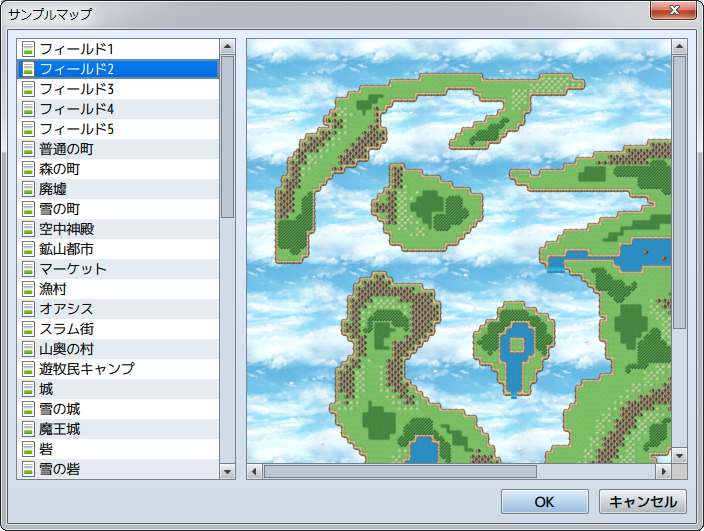
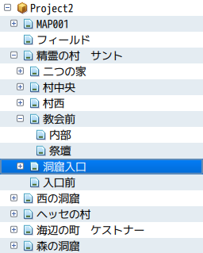

マップデータの操作
マップリストでマップデータの項目を右クリックすると、そのマップを対象に設定変更やコピーなどの操作が行なえます。各項目の機能は以下のとおりです。
コンテキストメニューによる操作
マップリストでマップデータの項目を右クリックすると、そのマップを対象に設定変更やコピーなどの操作が行なえます。各項目の機能は以下のとおりです。
- 編集
- マップデータの設定ウィンドウを開きます。設定項目の詳細は［マップデータの設定］をご覧ください。
- 新規
- 新しいマップデータを追加します。設定項目の詳細は［マップデータの設定］をご覧ください。
- ロード
- サンプルのデータをもとに新しいマップデータを作成します。表示されるウィンドウの一覧でデータ名をクリックして内容を確認し、［OK］をクリックします。

- コピー
- マップデータをクリップボードに取り込みます。
- 貼り付け
- クリップボード内のマップデータを追加します。
- 削除
- マップデータを削除します。
- シフト
- マップ全体のタイル配置をずらします。ずらす方向とタイル数を指定します。
- ダンジョン生成
- 迷路状のマップを自動生成します。詳しくは［補助ツールの使い方］の項目をご覧ください。
- 画像として保存
- 選択したマップを画像形式で保存します。
マップのグループ化

マップリスト上のマップデータの項目を別の項目にドラッグすると、後者のマップデータの下位に表示されます。街のマップの下に、建物の内部マップをまとめるというように、マップデータをグループ化して管理するのに便利です。下位に移動したマップは、プロジェクト名のフォルダにドラッグすれば最上層に移動できます。
この階層表示はマップリスト上の表示の仕方のみを変えるものです。マップのデザインや設定には一切影響を与えません。